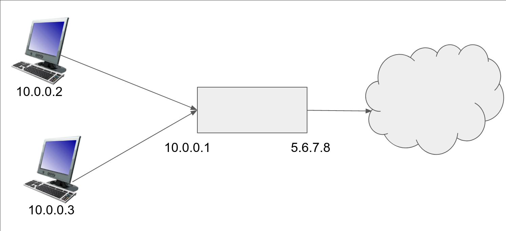
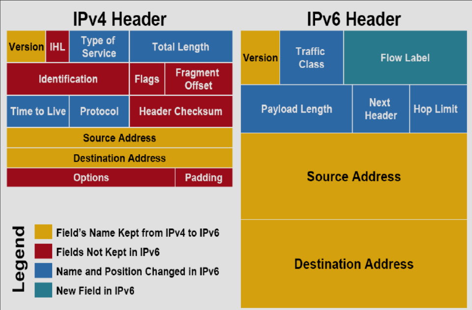

Лекция 1. Введение
Мы будем обсуждать общие идеи как работают сети сейчас, историю часто будем скипать.
Мы хотим, чтобы компьютер A и компьютер B могли обмениваться сообщениями между собой. Простейшее решение задачи — соединить два компьютера проводом и по проводу гонять сообщения. Изначально так и было, но компьютеров становилось все больше. Проводить \(n^2\) проводов, чтобы соединить все компьютеры попарно, стало невозможным.
Можно сделать так, как делалось раньше в телефонах. Компьютер A говорит, что хочет поговорить с компьютером B. Промежуточный узел замыкает провод компьютера A на провод, идущий к компьютеру B. У такого подхода есть проблема — число проводов в узле ограничено. Кроме того, канал часто простаивает — компьютеры не отправляют много сообщений подряд.
Мы хотим, чтобы по каждому проводу могло общаться много устройств. Разобьем сообщение на небольшие куски (пакеты) (1-1.5кБ). Компьютер A отправляет кусок некоторому узлу C, тот передает дальше, и так далее, пока кусок. Главное преимущество подхода — мы используем каналы только тогда, когда передаем данные.
В интернете есть hosts (хосты), которые общаются, и "коробочки", которые пересылают данные, коробочки соединены linkами. Коробочки бывают разных видов — роутеры, свитчи, маршрутизаторы, коммутаторы - о них мы поговорим позже.
Интернет, это не "штука, которая есть", это множество независимых сетей, которые общаются друг с другом.
Минимальное время передачи пакета — число узлов в пути * размер пакета / пропускную способность канала.
Данные между узлами передаются с помощью различных соединений:
- Витая пара — два медных провода. 100 Мб/с - 10 Гб/с.
- Коаксиальный провод - в РФ не встречается, в Европе и США распространены (legacy).
- Оптоволокно — стекло, проводящее световой сигнал. 10-100 Гб/с.
- По воздуху:
- WiFi: 10-100 Мб/с.
- Мобильные сети, например 4G: 10 Мб/с.
- Bluetooth
- Спутник: 45 Мб/с.
Направление пакетов
Есть две задачи: forwarding и routing.
- Forwarding - устройство локально по таблице маршрутизации решает, куда переслать пакет.
- Routing - глобальная задача построения таблиц маршрутизации.
Routing очень сложен, т.к. устройства могут отваливаться, провайдеры не хотят делиться устройством своей сети, есть разные целевые функции, которые мы хотим оптимизировать. С картой всех компьютеров мы могли бы написать Дейкстру, но собрать карту всего интернета невозможно.
Congestion
В роутер может прийти несколько пакетов одновременно, они кладутся в некоторый буфер. Буфер конечен и если место кончилось, пакеты дропаются, происходит congestion. Большая часть потерь пакетов происходит из-за этого. Главное отличие дорогих роутеров от дешевых заключается как раз в размере буфера.
Хочется контролировать congestion - будем слать пакеты, пока они не начинают дропаться. При дропе будем понижать скорость посылки. Если все люди используют один и тот же алгоритм, то использование канала будет честным. Но кто-то плохой может не ограничивать свою скорость и забить канал своими пакетами. С течением курса мы будем понимать, что многое в интернете построено только на доверии. Но плохим людям вручную могут отключить интернет или даже посадить.
Протоколы
Протоколы описываются в документах RFC (Request for Comments) умными людьми. Координирует новые протоколы в основном IETF (Internet Engineering Task Force). Умные люди создают RFC Draft, который может меняться, его обсуждают ещё более умные люди и, возможно, принимают. Есть ещё также ISO (International Organization for Standartization), у них крутые стандарты, но за них нужно платить и они часто оторваны от жизни.
Изначально протоколами занимались американские военные, а они очень любят аббревиатуры, например, HTTP или TCP. До сих пор все так и называют новые протоколы.
Уровни
Когда браузер хочет открыть страничку, он не хочет думать о битиках, которые идут по проводу. Он просто создает пакет и говорит ОС отправить его на сервер. Таким образом образовываются слои абстракции.
Пример:
- HTTP пакет кладется в TCP поток.
- TCP разбивает данные на пакеты и заворачивает их в IP пакеты.
- IP пакеты упаковываются в WiFi и передаются по радио.
- WiFi точка принимает пакет, смотрит на пакет, видит, кому его надо передать и передает следующему узлу.
Модель пяти слоев
- Application - как приложение получает данные (HTTP, DNS, IMAP)
- Transport - как запрос передается целиком, не повреждается и т.д. (TCP, UDP)
- Network - как пакеты передаются по сети (IP, больше ничего (за исключением локальных сетей))
- Link - как логически передать биты (Ethenet, WiFi, PPP)
- Physical - как физически передать биты (WiFI)

IP работает поверх всяких link протоколов, над IP работают TCP и UDP, над которыми уже все происходит.
Модель ISO/OSI (ЭМВОС)
- L7: application
- L6: presentation - здесь происходит шифрование HTTPS.
- L5: session - открытие и закрытие соединения между клиентами.
- L4: transport
- L3: network
- L2: link
- L1: physical
Эта модель была создана до интернета, поэтому она не совсем соответствует инженерной реальности. Важно запомнить номера уровней, их часто используют.
Все эти модели всегда представляют реальность. Например, VPN работает поверх L4, но предоставляет протокол L2. Можно тогда скопировать всю иерархию и поставить копию поверх исходной, тогда схема похожа на реальность. Кроме того, иногда нижние слои смотрят на верхние, например L2 смотрит на IP-адрес.
Лекция 2. IP
Исторически протокол IP был 4-й версии, первые три не взлетели. Адрес - 32 бита, записанные как, например, 87.250.250.242. Каждый байт пишется в десятичной системе через точку. Есть проблема — компьютеров больше, чем \(2^{32}\) штуки.
Поэтому был создан IPv6: 128 бит. Адрес обычно разбивают на 8 кусков по два байта, которые записываются четырьмя шестнадцатеричными цифрами. Пример: 2a02:06b8:0000:0000:0000:0000:0002:0242. Это каноническая запись. Часто получается много нулей, поэтому одну группу нулей, идущих подряд, можно дропнуть, записав так: 2a02:6b8::2:242. Последние две группы также можно записать как IPv4 адрес (только внешне, адреса разных версий не связаны).
IP сети
Часто нужен не один адрес, а много. Один из способов говорить про много адресов — сеть. Зафиксируем префикс адреса и скажем, что все адреса, начинающиеся с этого префикса, находятся в этой сети. Тогда пишут адрес и длину префикса через черту: 87.250.250.0/23. Также иногда пишут маску вместо префикса, где префиксные биты - 1, а остальные 0. Иногда ещё пишут дополнение к маске, называемое wildcard. Адрес с постфиксом только из нулей или единиц обычно нельзя назначать компьютерам в сети. Есть исключение если сеть /31, т.к. иначе её вообще нельзя использовать.
Маршрутизация
Таблицы маршрутизации используются сетями. Пример:
192.168.99.0/24 dev wlan0
0.0.0.0/0 via 192.168.99.1
Расшифровка: если пакет направлен на адрес из подсети 192.168.99.0/24, то он отправляется в WiFi сеть wlan0, чтобы пакеты дошли другим устройствам в этой сети. Если пакет направлен на любой адрес, то он отправляется в 192.168.99.1 (роутеру).
Если пакет не попадает под какое-либо правило, то мы его дропаем.
Когда по адресу мы решаем, по какому из правил действовать, мы выбираем наиболее ограниченное правило, т.е. то, где сматчилось больше всего битов. Пример: 192.168.99.17 пойдет по первому правилу, а не по второму. Это явление называется LCM (Largest Common Mask)
Вместо 0.0.0.0/0 часто пишут default.
Получение IP адреса
IANA - Internet Assigned Numbers Authority, присваивает номера в интернете, в частности IP адреса, но не только, например 4 и 6 для версий IP выдала бы IANA, если бы она существовала в момент создания этих протоколов. Существуют также организации, которые выдают адреса более локально, например RIPE (Regional Internet Protocol Exchange).
Раньше IANA выдавала таким организациям много адресов, частные клиенты обращались к этим организациям и брали адреса из их списков. Для IPv6 выдача работает так и до сих пор. Кроме того, все адреса выдаются из 2000::/3, чтобы не выдать слишком много. Так как адреса v4 у IANA и локальных организаций кончились, адреса приходится покупать.
Адресов v6 хватает, но их не все поддерживают, на данный момент только ~36% устройств. Большему распространению мешает отсутствие поддержки софтом или железом. Кроме того, для компаний нет выгоды переходить на v6. В РФ оборудование для слежки за трафиком не поддерживает v6, поэтому у нас только 10% поддержки v6.
IPv6 подсети выдают хотя бы размером /48, а на одно устройство выдается обычно /64, чтобы внутри компьютера тоже была адресация.
Особые адреса
Loopback - направляет пакеты от себя себе.
- 127.0.0.1/8
- ::1/128
Несуществующий адрес (можно хранить как sentinel, что адреса нет)
- 0.0.0.0/8
- ::/128
Если слушать на 0.0.0.0, то на этот адрес приходят все пакеты.
Для локальной сети:
- 192.168.0.0/16
- 172.16.0.0/12
- 10.0.0.0/8
- 100.64.0.0/10
- fd00::/8 - после fd необходимо генерировать 56 битов случайно, суффикс можно задавать произвольно. С хорошим рандомом велик шанс, что этот адрес уникален глобально. Правда, он не маршрутизируется, т.е. от вас можно будет получить пакет, но никто не будет знать, как отправить ответ.
Адреса из этих подсетей можно брать для использования в локальной сети. По этим адресам нельзя посылать пакеты во внешний мир.
NAT (Network Address Translation)
Допустим, мы хотим обратиться к 8.8.8.8. У нашего устройства нет белого (глобального) адреса, только серый (локальный), пусть он 10.0.0.2. Устройство пошлет пакет с src=10.0.0.2, dst=8.8.8.8. Наш роутер с серым адресом 10.0.0.1 и белым адресом 5.6.7.8 подхватит этот пакет. Если отправить пакет как есть, то ответ придёт на белый адрес 10.0.0.2, а он не принадлежит нам. Поэтому роутер перепишет в нём src на свой белый адрес, 5.6.7.8, и отправит пакет дальше. Роутеру приходит ответ от 8.8.8.8, он смотрит в свою хеш-таблицу и переписывает dst на 10.0.0.2, отправляет пакет нашему устройству, все сработало.
Но что если в локальной сети есть ещё 10.0.0.3, который также отправляет пакет на 8.8.8.8?
Тогда непонятно, кому возвращать ответ.
Костыль: пакеты у нас скорее всего TCP или UDP, в которых есть порты.
Тогда роутер будет класть в хеш-таблицу не dst -> src, а (dst, own_port) -> (src, src_port), где own_port - порт роутера, с которого будет отправлен пакет в глобальную сеть (выбран случайно).

У этого решения есть проблема — это не работает с чем-либо кроме TCP и UDP, поэтому ничего другого практически и не существует.
В реальности у вашего домашнего роутера часто тоже нет выделенного IP адреса и пакеты проходят несколько слоев NAT до глобальной сети.
Ещё особые адреса
Link local адреса:
- 169.254.0.0/16
- fe80::/10
Если никто не выдает IP адреса (например, соединили два компьютера проводом), то используются link local адреса.
Broadcast:
- 87.250.250.0/23 - приходит всем компьютерам в сети. Это позволяет спамить пакетами, поэтому он не работает (работает только локально).
- 255.255.255.255/32 - приходит всем компьютерам в локальной сети (все компьютеры, воткнутые в свитч).
Иногда мы хотим посылать много кому, но не всем. Для этого есть multicast адреса.
- 224.0.0.0/4 - компьютеры, которые хотят получать с адреса в этой подсети, объявляют это и только они получают пакеты с этого мультикаста. По дефолту это выключен, можно включить локально.
- ff00::/8 - то же самое, что и в IPv4. Есть ещё выделенные адреса, которые ограничивают, насколько далеко пакет может уйти, но это экзотика.
Структура IP пакета

- Source address, destination address - очевидно
- Первые 4 бита — версия IP (4 или 6)
- (только IPv4) IHL: Internet Header Length — длина заголовка в 32-битных словах. Размер пакета меняется, т.к. есть опциональные Options. Размер поля IHL - 4 бита.
- В IPv6 есть поле Next Header, которое говорит, что идет после заголовка. Например, TCP, UDP или IP Extension - метаданные. В каждом расширении тоже есть поле Next Header, поэтому число расширений неограниченно. Пример extension: jumboграммы, которые превышают максимальный размер пакета для экономии на заголовках.
- Total length - длина пакета, включая заголовок (16 бит).
- Payload length - длина пакета, не включая заголовок (16 бит).
- Time to Live - один байт, который уменьшается каждый раз, когда пакет проходит узел.
Если TTL = 0, то пакет отбрасывается и обычно возвращается сообщение об этом (но не обязательно).
Это сделано, чтобы пакеты не заблуждались в сети. Есть хак — можно узнать наш путь до некоторого узла, выставляя TTL = 1, 2, ...
Это делает
traceroute(илиtracertдля рабов на Windows). Обычно TTL=64, этого хватает, т.к. диаметр интернета ~40. - Header checksum - контрольная сумма заголовка, кроме TTL. Пакеты настолько редко ломаются, что IPv6 решил это убрать.
- Padding дополняет нулями пакет, если options слишком короткий. Дополнение идет до целого числа 32-битных слов.
- Type of Service (IPv4) или Traffic Class (IPv6) - важность пакета. Важность локальна в рамках сети, например провайдер сам решает, что выставить. Последние два бита - ECN (Explicit Congestion Notification). Если отправитель его выставил и в каком-то из узлов на пути становится мало места, то он может отправить пакет дальше с пометкой Congestion Control. Когда отправитель получит пакет назад (с выставленными метками), то он должен реагировать так, как будто встретил дроп пакетов.
- Flow Label (IPv6) - идентификатор потока. Роутеры будут стараться (но не обязаны) посылать пакеты в одном потоке по одному и тому же маршруту, чтобы пакеты приходили по порядку.
IPv4 гарантирует, что можно передать пакет размером 768 байт или меньше (включая заголовок), IPv6 - 1280 байт, а возможно и больше. Для WiFi или витой пары обычное ограничение сверху - 1506 байт. Максимальный размер пакета, который может передать сеть, называется MTU (Maximum Transfer Unit).
Фрагментация
Если размер пакета больше, чем MTU, то пакет делится на два пакетa. В IPv4 есть флаг (в Flags) MF, который указывает, является ли пакет частью большого пакета. При MF в Fragment Offset пишется номер пакета в большом пакете, а Identification - идентификатор большого пакета.
Пример: был пакет с MF=0, FO=0 и случайным Id. Он не пролезает в следующую линку и образовываются два пакета:
- MF=1, FO=0, Id=Id исходного пакета
- MF=0, FO=размер предыдущего пакета, Id=Id исходного пакета.
Пакеты собирает получатель. Есть проблема — непонятно сколько ждать получения кусков пакета. Кроме того, плохие люди могут посылать фрагменты пакета, но не все, тогда у получателя кончится память и все грустно. Решение — получатель дропает фрагменты, а отправитель, когда не получает ответ, начинает слать пакеты меньше, чтобы они не разбивались на фрагменты.
В IPv6 нет фрагментации.
В IPv4 есть ещё второй флаг - DF (Don't Fragment). Если он установлен, то пакет не будет разбиваться на фрагменты.
Можно бинпоиском подбирать размер пакета, который получатель может принять.
Лекция 3. IP+Ethernet
ICMP
ICMP — Internet Control Message Protocol. Работает поверх IP и передает служебную информацию. В ICMP много видов сообщений, мы поговорим только о нескольких. В поле Protocol для IP пишется номер вида ICMP.
- ICMP Echo Request/Reply - через него работает ping.
- ICMP Destination Unreachable - при передаче пакет не достиг пункта назначения.
Поля показывают одно из:
- Fragmentation required - пакет больше MTU и выставлен Do not fragment в IP заголовке.
- Destination host unreachable
- Destination network unreachable
- Destination port unreachable - порт (TCP/UDP) не может принять
- * administratively prohibited - бан от файервола
- Time Exceeded - TTL истек.
- Trace Route - все промежуточные узлы должны отправить вам пакет. Есть проблема: можно поставить в src человека, который нам не нравится. Тогда если мы отправим один пакет Trace Route, человек получит много пакетов с разных адресов, это amplification атака и очень плохо. В итоге Trace Route забанен. В целом в ICMP требуют, чтобы возвращаемый пакет был не больше исходного пакета, чтобы не было атак. Кроме того, если пакет Time Exceeded потерян, то нельзя посылать ответный Time Exceeded по тем же причинам.
Мелочи
- NAT64 - способ для IPv6 узлов общаться с узлами, которые v6 не понимают. Он похож на NAT, просто переписывает адреса.
- whois - утилита, позволяющая узнать по ip-адресу, кому принадлежит адрес, куда жаловаться если с этого адреса атаки, подсеть и т.д.
- tcpdump - показывает все пакеты, идущие по некоторому интерфейсу на компьютере
- wireshark - графическая программа, позволяющая просматривать пакеты.
Ethernet и WiFi
Эти протоколы стандартизованы IEEE (той самой, которая флоаты). Ethernet — 802.3, а WiFi — 802.11.
Для link протоколов тоже нужны адреса и мы не можем использовать IP. Поэтому используются MAC-адреса. Они обычно записываются в виде шести пар шестнадцатеричных цифр, например, 00:11:22:33:44:55. Broadcast (всем в локальной сети) MAC-адрес это ff:ff:ff:ff:ff:ff.

Существуют разные "коробочки", которые могут быть использованы для передачи пакетов:
- Хаб (L1): без логики пересылает все сообщения всем подключенным клиентам. Сейчас почти не используются, т.к. они медленные.
- Коммутатор или свитч (L2): смотрит на dst адрес пакета и направляет туда, где dst находится. Расположение узлов коммутатор узнает, смотря на src адрес пакетов, исходящих от каждого узла. Если коммутаторы образуют не дерево, то все плохо — фреймы могут ходить по циклу (TTL нет), множиться и т.д. Простейший способ бороться с этим — не создавать циклы. Большинство коммутаторов, если видит mac-адрес на двух портах, то выключает один из них.
- Маршрутизатор (L3): то же самое, но на IP адресах, а не mac адресах.
MAC-адреса
Шесть октетов адреса делятся пополам. Первые три октета — уникальный номер организации (полученный в IEEE). Оставшиеся октеты выставляются организацией произвольно, обычно последовательно. Проблема: \(2^{24}\) адресов — мало для одной организации. Когда они кончаются, есть два варианта:
- Получить новый номер организации, но это сложно.
- Сделать идентификаторы не уникальными и использовать их заново. Тогда надо надеяться на то, что в рамках одной L2 сети адреса не повторяются, иначе все сломается.
В mac адресах есть два особых бита:
- Последний бит первого октета — multicast или unicast (редкость).
- Предпоследний бит первого октета — если он не выставлен, то mac адрес честный, иначе он придуман локально.
У виртуалок и всяких докеров тоже есть честные MAC адреса.
ARP (Address Resultion Protocol)
Мы хотим отправить пакет кому-то на IP адрес, но мы не знаем его MAC адреса.
Отправим сообщение на ff:...:ff: "у кого есть такой-то IP адрес?"
Если у кого-то есть этот адрес, он должен ответить и сказать свой MAC адрес.
В ARP есть таймауты, по которым мы говорим, что запись старая или удаляем запись вообще.
ND (Neighbor Discovery Protocol)
Это то же самое, что и ARP, но для IPv6. ND ещё умеет узнавать, кто является роутером в сети (Router discovery) и Redirection - роутер может сказать, что он больше не роутер и сказать, кто теперь является роутером.
DHCP
Допустим мы подключили наш ноутбук к сети. Нам нужен IP адрес, чтобы общаться, при этом адрес должен быть из правильной сети и уникальный.
Простейший способ это сделать — выставить руками, в линуксе это ip addr, но это не универсальный вариант.
Для получения IP адреса используется протокол DHCP.
Он работает поверх UDP, который работает поверх IP.
Чтобы отправить пакет IP, нужно иметь какой-то IP адрес.
Тупик? Не совсем, будем писать в src 0.0.0.0
- Отправляем запрос DHCP Discover всем (255.255.255.255) от никого (0.0.0.0).
- Тот, кто выдает адреса, выдает адрес и шлёт уже на этот адрес пакет DHCP Offer. Потенциально DHCP серверов в сети несколько, поэтому и таких пакетов может прийти несколько. В это время запрашивающее устройство слушает все пакеты, приходящие на его MAC адрес.
- Запрашивающее устройство выбирает понравившийся адрес и отправляет (с него) DHCP Request.
- Сервер отправляет DHCP ACK.
Адреса не даются навсегда, только на время lease timeout. Если устройство не хочет, чтобы по истечении таймаута менялся адрес, выполняется опять DHCP Request. При этом сервер может ответить DHCPNAK и не продлевать.